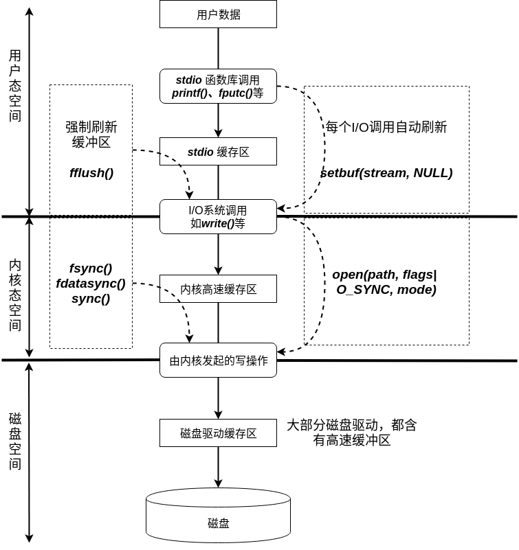

Linux系统编程:文件_IO缓存
I/O缓存概览

Linux系统中的 文件I/O缓存 操作大致如上图所示：
- 用户态空间
- 一般情况下，我们是通过 stdio库函数 来操作文件，包括 printf()、scanf()、fopen()等。在调用stdio库函数 时，默认会先存放在用户态空间申请的 stdio缓存区中。
- 不过，但如果使用 setvbuf()、setbuf()、setbuffer() 函数使 stdio缓存区无效 时，stdio库函数 在执行时会立即调用 I/O系统调用。
- 另外，如果使用了 fflush()，那么立刻刷新 stdio缓存区，执行 I/O系统调用。
- 内核态空间
- 在内核态空间，默认会有 内核高速缓存区 用来存储需要 写入磁盘的内容。
- 在使用I/O系统调用 时，如果指定了 open()函数 的打开方式为 O_SYNC模式，那么 I/O系统调用 处理的内容不会经过 内核高速缓存区，而是直接由内核发起写操作，将内容写入磁盘。
- 和stdio库函数操作缓存区类似，也有刷新 内核高速缓存区 的系统调用：fsync()、fdatasync()、sync()。
- 另外，会有 内核线程定时刷新内核高速缓存区。
- 磁盘空间
- 现在大多数 磁盘驱动 也会创建自己的 磁盘驱动缓存区。
- 由内核发起的写操作，会先缓存在磁盘驱动缓存区中，然后再写入磁盘。
Linux系统的文件I/O缓存大致就分为以上三个缓存区：stdio缓存区、内核高速缓存区、磁盘驱动缓存区。
stdio库的缓存
stdio缓存区 的作用在于，使得我们在调用 stdio库函数对数据进行读写 时，避免了频繁的进行文件操作。文件操作是对磁盘上的数据进行操作，相对于操作内存而言，会比较耗时。
设置stdio流的缓存模式
对于 stdio缓冲区大小的设置 有以下函数： stevbuf、setbuf、setbuffer。
stevbuf
#include <stdio.h>
int setvbuf(FILE *stream, char *buf, int mode, size_t size);
- stream - 指定需要修改哪个文件流的缓冲，打开流后，必须在调用任何其他stdio函数之前先调用 setvbuf()。后续对流的操作将会根据setvbuf函数设置来操作。
- buf - 自定义的缓存区。
- 可以是静态设置的 buf[1024]，也可以是在堆上分配的 buf = malloc(1024)
- 但不能是栈上的，在销毁时会使程序发生错误。
- buf可以为NULL，此时会为stream自动分配一个缓存区。
- size - 自定义缓冲区的大小，buf为NULL时，忽略此选项。
- mode - 缓存区类型。
- _IONBF(no?) - 不缓存，直接调用系统调用。 setvbuf(stdout, NULL, _IONBF, 0)
- _IOLBF(line?) - 行缓存
- 对于输出流，当遇到换行符或者缓存区已满时，刷新缓存区。
- 对于输入流，每次读取一行数据。
- _IOFBF(full?) - 全缓存，当缓存区满了，才调用系统调用。也就是说，单次调用 read()、write() 函数会直接操作buf。
setbuf
#include <stdio.h>
void setbuf(FILE *stream, char *buf);
setbuf(fp, buf) 调用和 setvbuf(fp, buf, (buf != BULL)? _IOFBF: _IONBF, BUF_SIZE) 的效果一样。
- 如果buf为NULL，则使用 无缓存模式。
- 如果buf不为NULL，则使用 全缓存模式。
- BUF_SIZE 会根据buf的大小自行决定。
setvbuf
#define _BSD_SOURCE
#include <stdio.h>
void setbuffer(FILE *stream, char *buf, size_t size);
setbuffer(fp, buf, size) 调用相当于调用了 setvbuf(fp, buf, (buf != NULL)? _IOFBF: _IONBF, size)。
- 和setbuf一样的效果，只不过调用者可以指定buf的大小了。
fflush
#include <stdio.h>
int fflush(FILE* stream);
强制刷新stream指定的缓存区，如果参数为NULL，将会 刷新所有的stdio缓存区。
文件I/O系统调用的缓存
在使用write系统调用时，数据会保存在内存中，而并不是第一时间写入磁盘，而是等待 内核线程pdflush 刷新了 内核高速缓存区 才将数据写入。
如果操作系统，在write操作之后，磁盘同步数据之前发生了崩溃，那么这一部分的数据将不会写入磁盘，造成了丢失。
同步I/O数据完整性和同步I/O文件完整性
- 同步I/O数据完整性(synchronized I/O data integrity completion)
- 就读操作而言，在读操作之前，如果存在改变磁盘数据内容的写操作，会先执行写操作。
- 就写操作而言，由于大多数情况下，文件元数据 和 文件数据 一般不在相同的区域，当只是对文件进行了修改(文件大小并未改变)时，文件的修改日期就不会立即写入磁盘。下次读取文件信息时，会在缓存中读取文件的改变日期，而不是重新在磁盘上读取。
- 同步I/O文件完整性(synchronized I/O file integrity completion)
- 所有的数据都会同时写入磁盘，即使部分元数据对后续的读操作中并无用处。
文件完整性使用的系统调用为 fsync。数据完整性使用的系统调用为 fdatasync。
#include <unistd.h>
int fsync(int fd);
int fdatasync(int fd);
fsync和fdatasync 能够 使得数据保持完整性，但是对于性能来说却很糟糕。在执行这两条命令时，需要 等待磁盘I/O操作执行完毕，这部分的时间相对于程序来说是很长的。
fdatasync 相对于 fsync 来说，减少了一次元数据的写入过程，对于减少I/O操作次数是很有用的，比如对于性能要求极高，而对于某些元数据(时间戳)的准确性要求不高的应用，很有帮助。
#include <unistd.h>
void sync(void);
sync系统调用 将刷新所有的内核缓存区，当所有数据都已经写入磁盘时，才返回。这一过程是相当耗时的。
在open时指定同步策略
除了上面的手动同步数据外，还可以在open系统调用使用时，设置打开模式，启动相应的同步策略。
- O_SYNC - 每个write()调用都会 按照文件完整性 自动将文件数据和元数据刷新到磁盘上。
- O_DSYNC - 每个write()调用都会 按照数据完整性 进行操作。
- O_RSYNC - 和 O_SYNC以及O_DSYNC 配合使用，按照两者的处理方式 进行读操作。
直接I/O
在使用open系统调用时，如果使用了参数 O_DIRECT，将使得打开的文件不使用 内核高速缓存区。
不推荐使用 直接I/O，内核针对 内核缓存区 做了很多优化，如果使用了 直接I/O 将无法受益于这一优化措施。
但对于某些数据库系统来说，高速缓存和I/O优化机制都需要自己实现，无需内核消耗CPU时间和内存来完成相同的任务。
总结
- 操作系统对数据的缓存无处不在：
- 寄存器缓存：L1、L2、L3(目前主流三级)，用于缓存内存数据。
- stdio缓存区，处于用户态空间，缓存文件数据。
- 内核高速缓存区，缓存系统调用修改的数据。
- 磁盘驱动缓存区，数据写入磁盘前，驱动层面对数据进行缓存。
- stdio缓存区
- stdio库函数使用 stdio缓存区 对 文件流数据 进行缓存。
- 可以使用 setvbuf、setbuf、setbuffer 来 自行设置文件流的stdio缓存区。
- setvbuf可以选择三种模式，常用的模式为 无缓存 和 全缓存。
- 使用fflush强制刷新指定文件流的stdio缓存区，将调用 write() 将数据刷新到 内核高速缓存区。
- 内核高速缓存区
- 对于内核高速缓存区，可以调用 fsync 和 fdatasync 手动刷新指定 文件描述符 的缓存。
- fsync 为 文件完整性同步，会将文件的 原始数据和元数据 都写入磁盘。
- fdatasync 为 数据完整性同步，将 原始数据 写入磁盘。
- 同步数据是件很耗时的工作，如果频繁的调用，会严重影响性能！！
- 内核会定期调用 内核线程pdflush 对 内容发生变化并且在规定时间内未显示的同步到磁盘上的文件 进行同步，目的是规避缓冲区与磁盘内容长期不一致的问题。
- 内核对 内核高速缓存区 做了很好的优化，一般情况下，不需要使用 直接I/O。